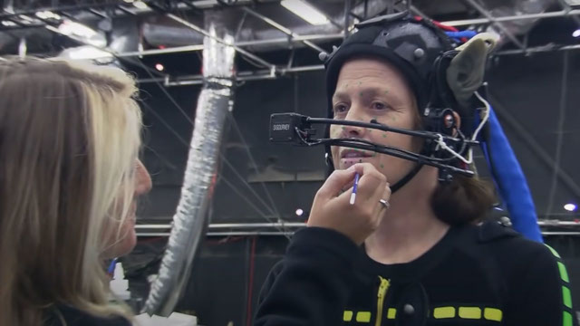

Avatar: trajes de captura de movimento podem ajudar a diagnosticar doenças
Segundo uma nova pesquisa realizada no Reino Unido, os trajes de captura de movimento, comumente usado em filmes como Avatar: O Caminho da Água, também podem ser usados para a detecção de algumas doenças que prejudicam o movimento. Como o traje utiliza um sistema para a detecção do movimento, ele também pode ajudar a diagnosticar problemas relacionados ao movimento do corpo humano. Dois estudos sobre o tema foram publicados na revista científica Nature Medicine, e os pesquisadores testaram os trajes em pessoas com Ataxia de Friedreich (FA), uma doença genética que compromete o movimento ao causar danos no sistema nervoso. Eles também usaram a tecnologia para detectar a Distrofia Muscular de Duchenne (DMD). Assim, descobriram que a inteligência artificial que detecta os movimentos foi capaz de prever a progressão da doença melhor que um médico.
Ler mais
Facebook drena energia das baterias de celulares, diz ex-empregado
O Facebook está drenando em segredo a energia das baterias de celulares dos seus usuários. A informação vem da acusação de um processo judicial movido por um ex-funcionário da rede social no Tribunal Federal de Manhattan. O procedimento é conhecido como “negative testing” e permite a realização de testes remotos. De acordo como o autor da ação, o cientista de dados George Hayward, esses testes de campos, realizados supostamente sem o conhecimento dos usuários, permitem que as empresas de tecnologia consigam avaliar — de forma “sub-reptícia” — algumas questões como velocidade de execução de aplicativos ou tempo de carregamento de imagens. “Isso pode prejudicar alguém”, teria dito o funcionário à sua gerente, recebendo em resposta a explicação: “prejudicando alguns poucos podemos ajudar as grandes massas”.
Ler mais
Google revela IA que cria músicas a partir de simples textos
Dall-E? Midjourney? Transformar instruções em imagens? Que nada, o Google foi um pouco mais além. A big tech criou uma inteligência artificial (IA) que cria música de qualquer gênero a partir de descrições em texto. Infelizmente, ela não será liberada para o público. O MusicLM não é a primeira IA para gerar música, pois já existem o Riffusion, Dance Diffusion, AudioML e Jukebox. O diferencial da ferramenta do Google é a possibilidade de produzir canções mais complexas e alta fidelidade. A IA foi treinada com dados de 280 mil horas de música para aprender a compor sozinha de maneira coerente.
Ler mais